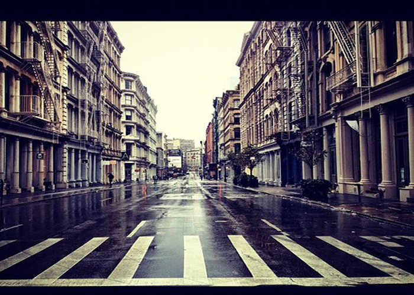

HYPE X BEAST
What gives New Yorkers this über cool, semi-sophisticated, just-rolled-out-of-bed-two-hours-ago-that’s-how-long-it-took-me-to-look-like-this aura? It’s all in the clothes. Dress like you belong, and soon enough tourists will turn to you for directions. New York is very Trend Driven, it is such a melting pot of other countries that you literally see everything that’s going on in the world. It’s really a mash up here where everything collides.Most New Yorkers wouldn't be caught dead wearing an "I Love NY" T-shirt, or any item of clothing purchased on vacation (such as clothes from Disneyland). Your safest bet is to wear black, dark blue or some shade of grey. When the weather is warmer, white and beige are also acceptable. Pay attention to your footwear. Particularly in Manhattan, you won't see people wearing sneakers (too casual) or flip-flops (because they bring your feet too close to the dirty sidewalk). Loafers, heels, boots, and heeled sandals are acceptable.
